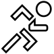

Introduktion
5km programmet er en ny og spændende måde at begynde at løbe på. 5km programmet fungerer som en metronom - programmet fortæller dig hvornår du skal løbe, hvornår du skal gå og hvor lang tid du skal gøre dette.
5km programmet bestå af 16 uger med 3 løbsdage i hver uge. Hver dag varer mellem 13 og 30 minutter. Den første dag f.ex. består af 13 minutters aktiviteter (løb og gang). Men efter en kort tid vil løbsdagene blive længere og længere med længere og længere løbepas. Følger du programmet vil du ende op med at kunne løbe 5 km uafbrudt - uden gang.
Hver løbsdag består af 1 eller flere aktiviteter. Disse varierer mellem løb og gang.
Ideen er, at du f.eks. løber dag 1 om mandagen, dag 2 om onsdagen og dag 3 om lørdagen. Du skal helst løbe 3 dag pr. uge. Og du skal helst også løbe de samme dage hver uge - dvs. du skal helst løbe dag 1, 4, 7, ... på den samme ugedage. Det samme gælder for dag 2, 5, 8, ... og 3, 6, 9, ...
Se nedenstående tabel:
| Mandag | Onsdag | Lørdag | |
|---|---|---|---|
| Uge 1 | 1 | 2 | 3 |
| Uge 2 | 4 | 5 | 6 |
| Uge 3 | 7 | 8 | 9 |
| Uge 4 | 10 | 11 | 12 |
| Uge 5 | 13 | 14 | 15 |
| Uge 6 | 16 | 17 | 18 |
| Uge 7 | 19 | 20 | 21 |
| Uge 8 | 22 | 23 | 24 |
| Uge 9 | 25 | 26 | 27 |
| Uge 10 | 28 | 29 | 30 |
| Uge 11 | 31 | 32 | 33 |
| Uge 12 | 34 | 35 | 36 |
| Uge 13 | 37 | 38 | 39 |
| Uge 14 | 40 | 41 | 42 |
| Uge 15 | 43 | 44 | 45 |
| Uge 16 | 46 | 47 | 48 |
5km programmet holder øje med dine fremskridt så du nemt kan se, hvilke dage du mangler at fuldføre.
Når du skal igang med en dag, så starter du 5km programmet og programmet fortæller dig hvilken aktivitet du skal udføre - det vil være sig løb eller gang. Programmet starter så en nedtælling og når du hører en lyd skal du skifte aktivitet.
Den første dag ser således ud:
|  |  |
|
| 2:30 | 2:30 | 1:30 |
 |
||
| 1:30 | 2:30 | 2:30 |
Løb 2:30, gå 2:30, løb 1:30, løb tilbage 1:30, gå tilbage 2:30 og løb tilbage 2:30.
Farven på manden viser om du skal løbe ud eller løbe tilbage.
Aktiviteter
Denne aktivitet viser, at du skal løbe i et tempo hvor du mærker at du får pulsen op. Tempoet bør være afpasset så du ville kunne snakke med en løbspartner uden at du bliver besværet. En grøn mand viser, at du skal løbe tilbage mod dit hjem.
Denne aktivitet viser, at du skal gå i et raskt tempo - en anelse hurtigere end du normalt gør. Du skal dog ikke løbe. En grøn mand viser, at du skal gå tilbage mod dit hjem
Du er færdig for idag. Klap dig selv på skulderne, stræk ud og tag et langt og varmt bad!